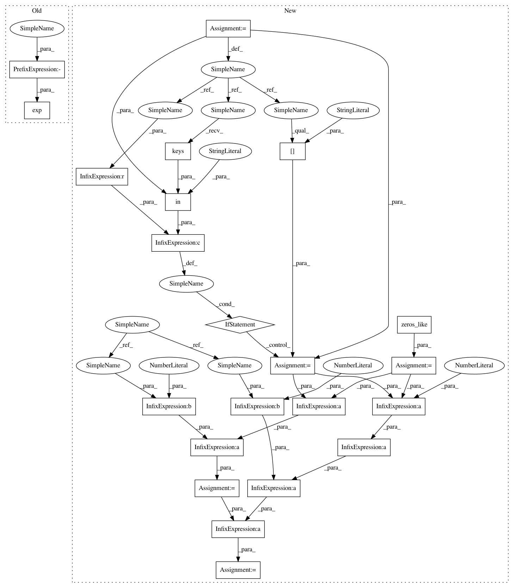

2eef5768774b21335f214e40289d2dd20dfb33c9,GPy/likelihoods/weibull.py,Weibull,d2logpdf_dlink2_dr,#Weibull#Any#Any#Any#,183
Before Change
:returns: derivative of hessian evaluated at points f and f_j w.r.t variance parameter
:rtype: Nx1 array
d2logpdf_dlink_dr = -np.exp(-link_f)* (y ** self.r) * np.log(y)
return d2logpdf_dlink_dr
def d3logpdf_dlink3_dr(self, link_f, y, Y_metadata=None):
After Change
:return:
c = np.zeros_like(y)
if Y_metadata is not None and "censored" in Y_metadata.keys():
c = Y_metadata["censored"]
// uncensored = (1-c)*( -np.exp(-link_f)* (y ** self.r) * np.log(y))
// censored = -c*np.exp(-link_f)*(y**self.r)*np.log(y)
uncensored = (1-c)*-2*y**self.r*np.log(y)/link_f**3
censored = c*-2*y**self.r*np.log(y)/link_f**3
d2logpdf_dlink_dr = uncensored + censored
return d2logpdf_dlink_dr
def d3logpdf_dlink3_dr(self, link_f, y, Y_metadata=None):
In pattern: SUPERPATTERN
Frequency: 3
Non-data size: 22
Instances
Project Name: SheffieldML/GPy
Commit Name: 2eef5768774b21335f214e40289d2dd20dfb33c9
Time: 2017-07-27
Author: akash.dhaka@aalto.fi
File Name: GPy/likelihoods/weibull.py
Class Name: Weibull
Method Name: d2logpdf_dlink2_dr
Project Name: SheffieldML/GPy
Commit Name: 2eef5768774b21335f214e40289d2dd20dfb33c9
Time: 2017-07-27
Author: akash.dhaka@aalto.fi
File Name: GPy/likelihoods/weibull.py
Class Name: Weibull
Method Name: d2logpdf_dlink2
Project Name: SheffieldML/GPy
Commit Name: 2eef5768774b21335f214e40289d2dd20dfb33c9
Time: 2017-07-27
Author: akash.dhaka@aalto.fi
File Name: GPy/likelihoods/weibull.py
Class Name: Weibull
Method Name: d3logpdf_dlink3
Project Name: SheffieldML/GPy
Commit Name: 2eef5768774b21335f214e40289d2dd20dfb33c9
Time: 2017-07-27
Author: akash.dhaka@aalto.fi
File Name: GPy/likelihoods/weibull.py
Class Name: Weibull
Method Name: d2logpdf_dlink2_dr